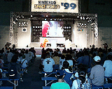
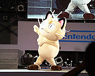
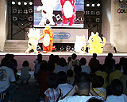
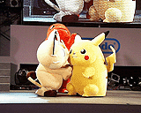

| 『着ぐるみポケットモンスターショー トゲピーをゲットするのニャ！』 |
|  午前10時10分からは、会場の中央付近にドーンと設置されたイベントステージにて、『着ぐるみポケットモンスターショー トゲピーをゲットするのニャ！』が上演されたんだヨ。ちいさな子供たちを中心に、ショーを見たいってひとがぞくぞくと集まってきて、十数列も並べたベンチがギッシリ埋まるほどの盛況ぶり。なかには、ピカチュウやゼニガメのぬいぐるみを抱きしめながら座っている女の子や男の子も。みんな、このステージを楽しみにしていたんだネ！ |
|  30分間のステージに登場するのは、ピカチュウ、トゲピー、ヒトカゲ、そしてニャースの４匹のポケモンたち。なんと、テレビアニメ版『ポケットモンスター』のポケモンたちと、同じ声でしゃべってくれるんだ！ やっぱりアニメでおなじみのナレーターによる解説もついて、なんだか本格的。ニャースのしゃべりも絶好調で「ニャンダカンダと聞かれたら、こたえてあげるが世の情け……」ではじまるロケット団の口上を、全部ニャースひとりで読みあげて、お客さんの笑いを誘ってましたゾ。 |
|  さて、ショーの内容のほうもチラッと紹介しておきましょう。おっかけっこをしてなかよく遊ぶピカチュウ、ニャース、トゲピーのもとに現れたニャース。ニャースはどうしてもトゲピーと遊びたいんだけど、ピカチュウがいるからトゲピーに近づけない。そこで、トゲピーをなんとかゲットしようとたくらむんだけど……とまあ、こんなカンジ。そういえば、アニメ版『ポケットモンスター』で、まだタマゴだったころのトゲピーをいっしょうけんめいあたためていたのって、ニャースだったよね。ニャースはトゲピーのこと、いまだに思いつづけていたんだね……なんだかちょっとせつない!? 最後は『ポケモン音頭』でみんななかよく踊っていたよ（会場の子供たちもいっしょに手拍子していてほほえましかったナ）。 |
|  このショーは、期間中の毎日、午前と午後とに１回ずつ行われる予定。スペースワールドに来たなら絶対一度は、耳をピクピク動かすピカチュウや、コミカルな動きが楽しいニャースたちに会ってほしいな。そうそう、ピカチュウの10万ボルトも見物ですよ!! |